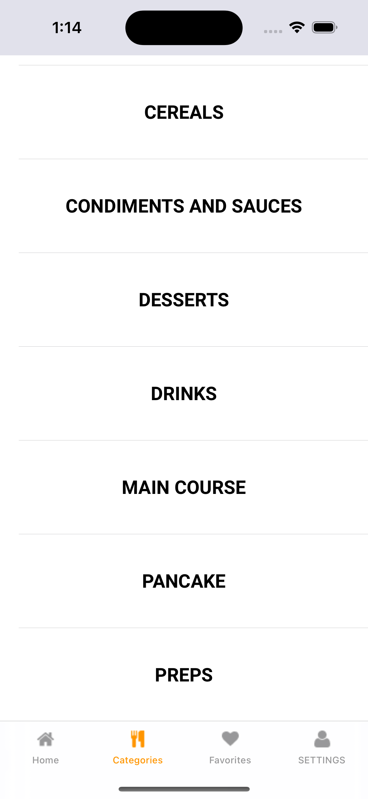
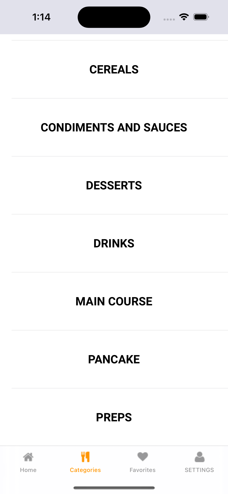

Statement
In today's rapidly evolving technological landscape, the significance of cyber security has reached unprecedented heights. Recognizing this, I am deeply impassioned by the field of cybersecurity and find immense satisfaction in developing solutions that not only safeguard organizations but also positively impact the individuals they serve.
As I embark on my journey into the realm of cybersecurity, my aspiration is to establish a reputation for innovation and proactive contributions to fortify processes aimed at protecting an organization's invaluable assets. As a cyber security analyst, my primary objective would be to ensure the utmost data security through the proficient use of cutting-edge SIEM tools like Splunk. By leveraging my expertise in SQL, I would also guarantee the availability and integrity of critical information stored within databases. Moreover, I am committed to upholding the highest standards of confidentiality to safeguard personal information from unauthorized access.
Beyond technical prowess, I recognize the ever-evolving nature of cyber threats, and I am dedicated to continuously expanding my knowledge and staying up-to-date with the latest trends and best practices in the field. By cultivating a proactive mindset, I aim to preemptively identify vulnerabilities and respond effectively to emerging threats, thereby reinforcing the resilience of the organizations I serve.
Driven by an unwavering commitment to excellence and a genuine passion for cyber security, I am eager to contribute my skills and expertise to the dynamic and challenging landscape of the cybersecurity industry. By joining forces with like-minded professionals, I aspire to create a safer digital environment for businesses, individuals, and society as a whole.
How It Works
By clicking on the project title on this webpage, you can conveniently view the projects directly within your browser.
IOS Development
Craving App
 

I have developed "The Craving App" a recipe application that I conceptualized and created. The primary objective of this app is to curate recipes directly from the web and provide users with a diverse array of meals from various regions and cultures. During my undergraduate studies, I passionately undertook this project as a personal endeavor. Although it was never officially released on the app store, I am pleased to inform you that the app is fully functional and operational to this day. Utilizing SwiftUI, I successfully crafted my inaugural application, a noteworthy accomplishment of which I am particularly proud. Enclosed within this correspondence, you will find the comprehensive source code and accompanying images showcasing the app's appearance. If you possess an Apple device and Xcode, I warmly welcome you to run the app at your convenience and kindly offer your valuable feedback and impressions.
Cybersecurity Tools and Enforcement
Government, Risk Management, and Compliance
This project consist of some audit samples conducted for a fictitious company, aiming to ensure meticulous compliance with key industry standards and regulations. These audits were specifically designed to assess the company's adherence to prominent frameworks, including HIPAA, PCI DSS, GDPR, FERC-NERC, as well as SOC Type 1 and 2. The documentation provided encompasses a comprehensive overview of the audit procedures, encompassing thorough assessments of data privacy, security controls, regulatory requirements, and overall risk management practices.
Network Analysis
I possess the valuable skill of providing network analysis using tcpdump. With tcpdump, I can capture and analyze network traffic, allowing me to gain deep insights into network behavior, troubleshoot issues, and optimize performance. I am proficient in utilizing tcpdump's powerful filtering capabilities to focus on specific network packets and extract relevant information. By examining packet headers, payload data, and various network protocols, I can identify anomalies, detect security threats, and diagnose network problems effectively. My expertise in tcpdump enables me to provide comprehensive and accurate network analysis, empowering organizations to enhance their network performance and ensure the integrity and security of their systems.
Linux
I am knowledgeable in Linux and proficient in managing file content, as well as authenticating and authorizing users. I can navigate the file system, manipulate files, and perform various operations using command-line tools. Additionally, I have experience in user management, implementing authentication mechanisms, and configuring access permissions. With my expertise in Linux, I can effectively handle file management tasks and ensure secure user authentication and authorization.
SQL
I am knowledgeable in SQL queries, filtering, and joining relational databases. I have experience in retrieving and manipulating data using SQL, applying filters to extract specific information, and joining tables to analyze interconnected data efficiently. With my expertise, I can effectively work with relational databases to perform data analysis and generate meaningful insights.
Detection and Response
My understanding the NIST lifecycle, which offers a comprehensive framework for successfully handling security incidents, is essential to being competent in detection and response. It starts with planning, where proactive measures are created, including risk assessments and security controls. In the subsequent phase, detection, tools like tcpdump enable packet inspection to spot potential threats and irregularities in network traffic. A well-prepared security team can rely on a playbook to respond quickly and efficiently if a threat is identified, following predefined actions to mitigate the incident. Finally, post-incident analysis and learning are greatly aided by my usage of SIEM technologies like Splunk and Chronicle. With the use of these tools, you can conduct searches and investigations, learning important details about the incident and improving the ability to respond to similar situations in the future. With a powerful foundation in these areas, I can significantly contribute to the detection and response efforts in an organization's cybersecurity posture.
Python Automation
With python I possess the ability to efficiently read from and write to files, develop automated algorithms, and conduct data analysis. With my Python skills, I can effortlessly manipulate and process data, extracting relevant information from various file formats and sources. I have expertise in creating automated scripts and algorithms that streamline repetitive tasks, saving time and increasing productivity. Additionally, I am well versed in using Python's extensive libraries and frameworks for data analysis, such as Pandas and NumPy, allowing me to handle large datasets, perform complex calculations, and generate meaningful insights.
Cybersecurity
Vulnerability Scanner
A vulnerability scanner is a specialized program designed to assess and analyze the security posture of a target website by systematically probing its infrastructure for potential weaknesses and vulnerabilities. This crucial cybersecurity tool employs various techniques to identify and evaluate vulnerabilities in the target system, such as outdated software, misconfigurations, and known security loopholes. The scanner meticulously examines the website's code, network configurations, and server settings, aiming to uncover potential entry points that malicious actors could exploit. Once the scanning process is complete, the vulnerability scanner generates a comprehensive report detailing all identified vulnerabilities, their severity levels, and recommendations for remediation. This report serves as a valuable resource for cybersecurity professionals, enabling them to prioritize and address the identified weaknesses to fortify the website's defenses against potential cyber threats. Regular deployment of vulnerability scanners is a fundamental practice in maintaining a proactive and robust cybersecurity strategy for organizations seeking to safeguard their digital assets and sensitive information.
Spider
The spider program is a powerful tool used in web application security and analysis to comprehensively map and explore the contents of a target website. Acting as a virtual arachnid, this program systematically crawls through the web pages of the designated site, indexing and cataloging all accessible files, directories, and links within its scope. By mimicking the behavior of search engine bots, the spider provides a holistic view of the website's structure, uncovering hidden or obscured content that may not be readily apparent through traditional navigation. This mapping process not only aids in understanding the website's layout but also serves as a crucial component in vulnerability assessments and penetration testing. Security professionals utilize the spider's findings to identify potential attack vectors, assess the web application's architecture, and gain insights into potential security weaknesses. This meticulous reconnaissance is instrumental in fortifying a website's defenses by proactively addressing any vulnerabilities and ensuring a more resilient cybersecurity posture.
Login Guesser
The login guesser is a program specifically designed for launching a wordlist attack, a common technique employed in cybersecurity assessments to breach login credentials. Operating on the principle of systematically trying different combinations of usernames and passwords from a predetermined list, this program aims to exploit weak or easily guessable credentials to gain unauthorized access to a target system. By leveraging a comprehensive wordlist that may include commonly used passwords, dictionary words, and permutations, the login guesser automates the process of attempting numerous login combinations in a rapid and efficient manner. This type of attack is a critical component of penetration testing, where security professionals simulate real-world scenarios to identify and rectify vulnerabilities. However, it is essential to note that the login guesser is also a tool that can be misused for malicious purposes, underscoring the importance of robust authentication mechanisms, password policies, and security awareness to mitigate the risks associated with credential-based attacks.
Homelab Setup
My cybersecurity homelab is a dedicated and controlled environment set up by individuals to simulate real-world cyber threats and vulnerabilities for the purpose of hands-on learning, skill development, and experimentation in the field of cybersecurity.
Network Topology
In my network topology project, I utilized Microsoft Visio to create a detailed and visually compelling representation of a network infrastructure. The diagram showcases the arrangement of various network components, including routers, switches, servers, and endpoints, providing a comprehensive overview of the system's architecture. Using Visio's intuitive interface, I meticulously designed the topology to reflect the connectivity, communication pathways, and logical relationships between network devices. This project not only demonstrates my proficiency in network design but also serves as a valuable documentation tool, aiding in the understanding of the network's structure and facilitating effective communication among stakeholders. The Visio diagram captures key elements such as IP addresses, subnets, and network segmentation, offering a holistic view that is instrumental in troubleshooting, planning, and optimizing the overall network performance.
Data Analysis
Data Analysis with Tableau
These projects show that I possess proficient knowledge and skills in analyzing data using Tableau. With my experience, I can effectively navigate and manipulate data within the Tableau platform to derive valuable insights and visualize trends. I am adept at creating interactive dashboards, reports, and visualizations that present complex data in a clear and concise manner. Utilizing the powerful features Tableau offers, such as data blending, calculations, and advanced visualizations, I am able to uncover patterns, identify correlations, and communicate data-driven findings to facilitate informed decision making.
Python Programs
Alien Invasion
Password Generator
Want To See More
If you'd like to explore more of the projects or coursework I've been involved in, please don't hesitate to click the project button located at the bottom of the page or follow the link to access my GitHub repository.